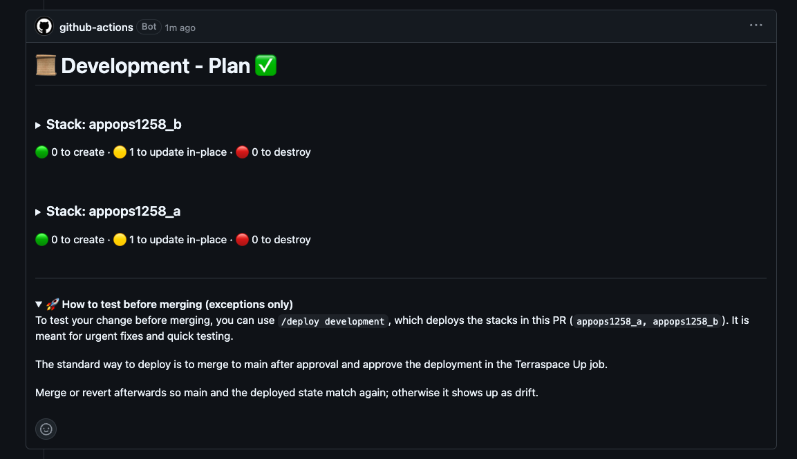
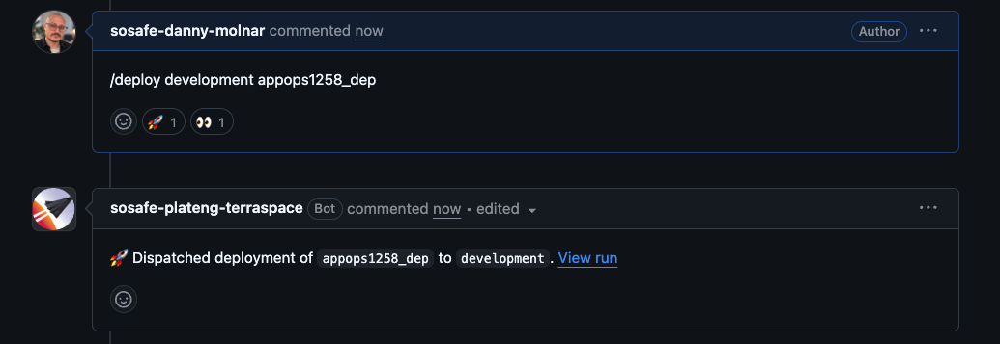
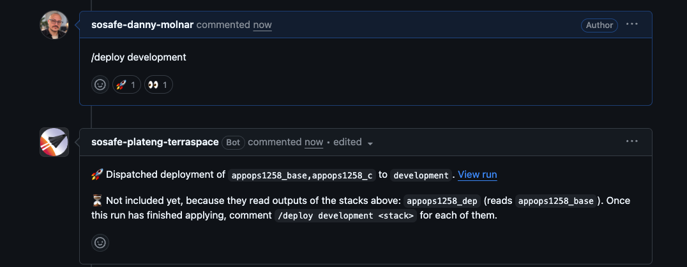
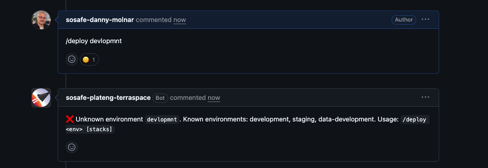
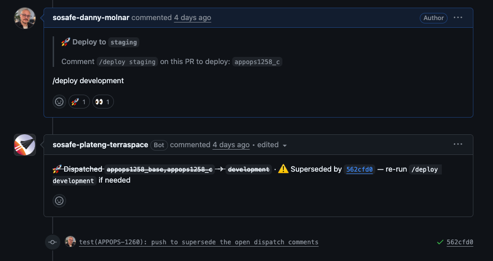
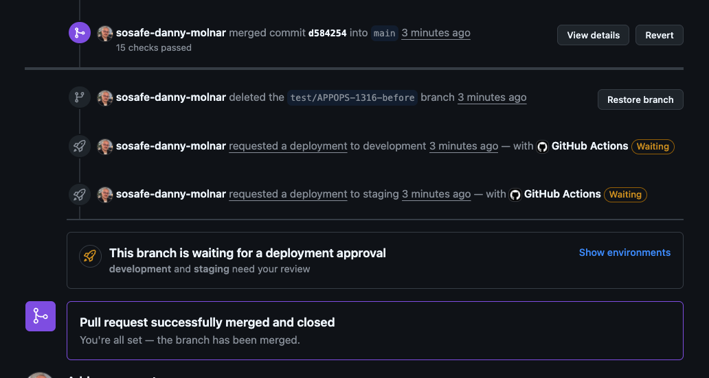
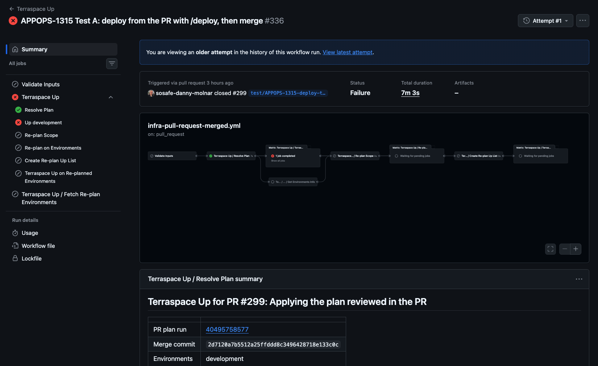
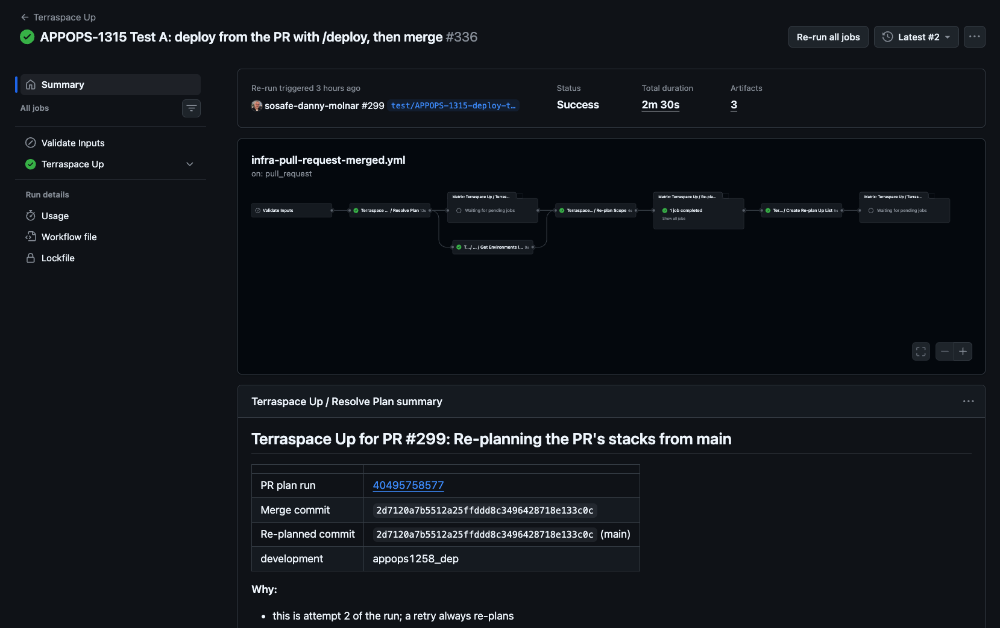

Apply and deploy what you reviewed, check only what changed, deploy by comment.
Danny Molnar & Miklos Vincze · AppOps, part of IDE (Infrastructure and Development Enablement)
Scope
Who this is for
Infrastructure repos only. Nothing changes for a repo until it opts in.
Affected
ts-* repos: ts-general, ts-security, ts-ai and more
/infra folders in service repos
AWS infrastructure through Terraspace and GitHub Actions
Not affected
Application repos
Their own CI/CD and release flow
Opt-inOne PR per repo. Revert it to go back.
Before
Reviewing and deploying were separate work
Every step repeated work the PR had already done.
The normal path
PR: plan every stack→Review→Merge→Plan again→Approve→Apply
Want to try it before merging?
Leave the PR→Actions tab→Manual Command→Pick branch, environments, stacks
The plan you reviewed is not the plan that gets applied
A one-stack change still plans everything
After
Three changes, shipped together
Opt-in workflows plus a PR comment command.
1
Plan only what changed
The PR plan covers the stacks it touches. Docs-only PRs plan nothing.
2
Apply what you reviewed
The reviewed plan is applied on merge, through the usual approvals. No second plan.
3
Test by comment
Comment /deploy development to try a change from the PR. It asks for an approval too. Not the normal way to ship.
What you get
Faster. Plan and apply jobs about 30% shorter in ts‑security.
Less runner time. Only changed stacks are planned; docs-only PRs plan nothing.
Safer. The plan you reviewed is the plan applied; a plan that went stale is refused.
Less manual work. Test from the PR, and the bot pushes the tofu fmt commit.
Median job time in the repo with the most data, 1 Oct to 9 Nov, before and after it opted in. Approval wait is not included.
In practice 1 of 3
A PR plans what it changes
The plan comment lists the changed stacks. Its footer explains how to test before merging, and that merging is the standard way.

Plan comment, footer expanded: testing before merge is for exceptions
Changes to shared files (modules, Terrafile, base config) still plan every stack.
In practice 2 of 3
Try it from the PR
Test a change in development without leaving the PR. Shipping still goes through merge.

Comment and bot reply

Dependent stacks: the bot names the waiting ones

Rejected requests get a short reply

A new push marks earlier replies as superseded
Use sparinglyFor testing in development and for emergencies. Deploying before merge makes the environment differ from main, so keep it the exception.
In practice 3 of 3
Merge applies the plan you reviewed
This is the normal path. You review, merge, and the merge run applies the plan from the PR. It does not plan again.

After the merge: the Up run waits for the environment approval
It plans again only when it must
Main changed the same stacks
The plan expired
The PR changed .github/
Then you approve the new plan.
When it goes wrong, on purpose
"Saved plan is stale"
It happens when the stack changed after the PR plan was made: you deployed it with /deploy before merging (one more reason to merge instead), or someone changed it outside the pipeline. OpenTofu refuses to apply the old plan, and the fix is one click.

First attempt: the Up job fails

Re-run all jobs: planned again, nothing left to apply
UseRe-run all jobs, not Re-run failed jobs (that applies the same stale plan again). Seen for real on ts-ai after a manual change in staging.
Good to know
What teams will notice
A short, honest list: what you will see, why, and what to do.
An extra approval when main moved. If someone changed the same stacks after your review, the saved plan is no longer safe. It is planned again and you approve the new plan.
A stale plan after /deploy. Deploying from the branch changes the environment, so the saved plan is outdated at merge. The run fails once: click Re-run all jobs and it finishes green.
Dependent stacks need a second /deploy. Stacks that read each other's outputs deploy in layers. The bot names the waiting ones; run /deploy again once the first layer is applied.
A format commit from the bot. It may push a tofu fmt commit to your PR branch. Run git pull before your next push.
The infra:no_changes label is still fine to use. It makes no difference now: PRs that do not touch infrastructure plan nothing on their own.
Better notifications are on their way. The old Slack message after a deploy is not in the new workflows yet; an improved notification system is under way and will follow.
Adopting it
How a repo opts in
AppOps opens and merges one PR per repo. Nothing for the repo team to do.
After that, the repo's next PR plans only what changed and applies the reviewed plan.
RollbackEasy: revert that PR and the repo is back on the old workflows. Repos that have not opted in are unaffected.
Also bundledThe exclude-stacks workflow, which some repos already have. ExpSquads repos get it in the same PR.
Implementation and testing optional
It is tested like code
Plan reuse and re-plan rules, and the test harness behind them.
Tests
Script tests against a fake Terraspace
Workflow tests for the job structure
Real runs in a test repo before merge
Rollout
Rolling out, and where to follow it
Repos opt in gradually, in small batches.
Where we are
PE org: done, all repos run on the new workflows
ES org: underway, the next batch is being merged now
New repos from the template start on the new workflows
Next
The remaining ES repos follow in small batches, one PR per repo
Should I deploy every change with /deploy? No. Merge and approve is the default. /deploy is for testing in development and for emergencies.
Does a PR plan stacks that depend on a changed stack? No, only the changed ones; a change to shared files plans everything.
Is anything missing compared to the old workflows? Not yet in v2: the policy check and the no-refresh plan mode. Slack notifications: an improved system is under way and will follow.
Can I opt my repo in? AppOps opens the PR; ask in the channel.
Do I still have to approve every deployment? Yes. After a merge the environment approval before an apply is unchanged, and /deploy asks for one too. Automatic deployments are the next thing on our radar.
What about PRs open when the repo switches? They are planned again on merge, with a new approval.
← → navigate · click a screenshot to zoom · N notes · T timer · F fullscreen · O skip optional · ? hide hint